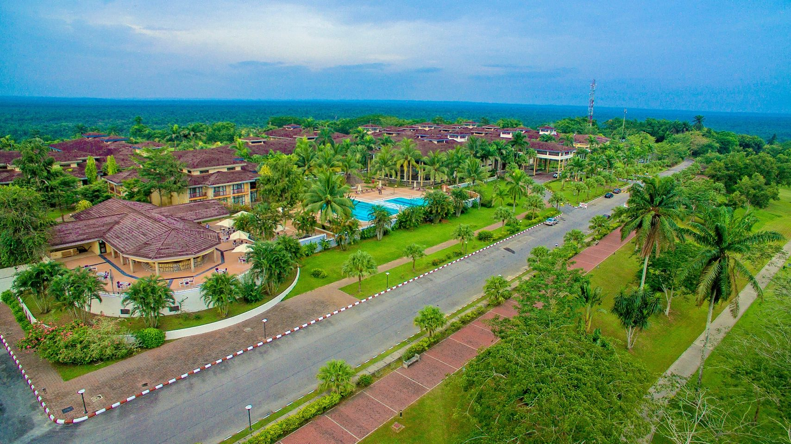

Welcome to Akwa Ibom Cultural Tourism
Discover the beauty, history, and traditions of Akwa Ibom State, a land blessed with breathtaking beaches, delicious cuisine, vibrant festivals, and warm-hearted people.
Introduction to Akwa Ibom
Located in the coastal southern region of Nigeria, Akwa Ibom is known for its rich cultural heritage, unique local delicacies like Afang Soup, and captivating tourist attractions. Whether you love nature, culture, or adventure, Akwa Ibom has something special for you.
Explore Our Highlights
Top Tourist Attractions
From the golden sands of Ibeno Beach stretching along the Atlantic coastline to the vibrant heart of Uyo at Ibom Plaza, Akwa Ibom is filled with destinations that will leave you in awe. Visit the National Museum of Colonial History to step back in time, or relax in the serene beauty of the Blue River in Ukanafun. Every corner of Akwa Ibom offers a story worth telling and a memory worth keeping.
See All Destinations →Rich Cultural Heritage
Experience the heartbeat of Akwa Ibom through its traditions. Savor local dishes like Afang Soup and Editan Soup cooked with fresh, indigenous ingredients. Discover the artistry in handwoven fabrics and colorful attire worn during ceremonies. Immerse yourself in vibrant festivals such as Ekpo and Ekpe, where masks, drumming, and dance bring ancestral stories to life. Our language, customs, and hospitality are treasures we proudly share with the world.
Discover Our Culture →Planning a Visit or Have Questions?
Whether you’re looking to plan a vacation, explore investment opportunities, or simply learn more about Akwa Ibom, we’re here to help. Our team is ready to provide detailed guides, travel tips, and personalized recommendations to make your visit smooth and unforgettable. Your Akwa Ibom experience starts with a single click.
Contact Us →